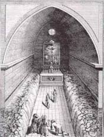
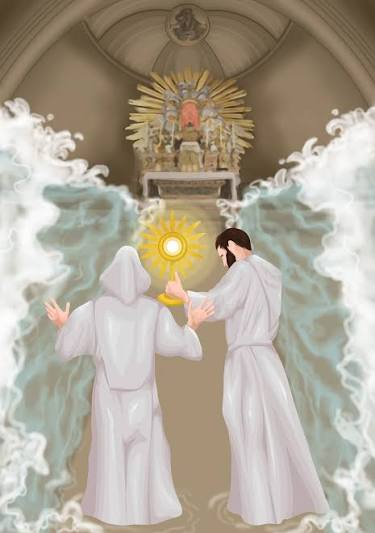

The 1433 Eucharistic Miracle of Avignon occurred on November 30 when devastating floods struck the city. Members of the Gray Penitents rowed to their flooded chapel to save the exposed Host, only to find the waters parted in two walls, leaving the altar and the Blessed Sacrament completely dry.
Upon entering their chapel by boat, the friars found that the floodwaters, which had reached a height of over six feet, were miraculously divided. The waters banked to the right and left of the altar as if they were solid walls. The pathway from the door to the altar—and the monstrance containing the Eucharist itself—remained completely dry.
Eyewitnesses: The miracle was verified by several hundred townspeople and local authorities who rushed to the chapel to witness the event. The friars recorded the testimonies in their register, which is still preserved today.
Annual Tradition: The Confraternity of the Gray Penitents still commemorates the event annually on November 30 at the Chapelle des Pénitents Gris in Avignon.